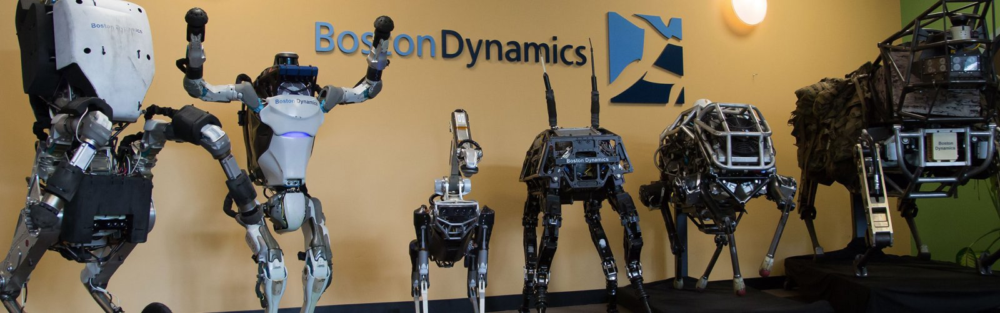
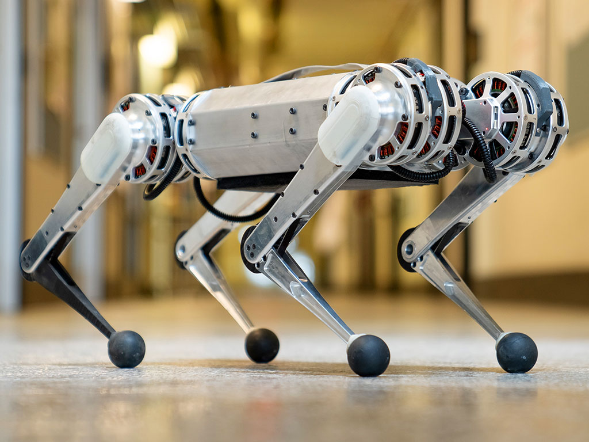

Boston Dynamics
Boston Dynamics is an engineering company specializing in robotics. It is known for developing a four-legged robot for military purposes. Previously, the company worked on replacing training videos with an interactive computer simulator.
The path of Boston Dynamics robots to the consumer was a long one: cooperation with the US military and a bad experience with Google.
How did a company that grew out of a university lab end up under the wing of legendary investor Masayoshi Son decades later, and how far does it still have to go to our homes?
The president and key figure of the company is Mark Raibert, who created it in 1992 on the basis of a group of engineers at the Massachusetts Institute of Technology.
Demonstration videos of the robot manufacturer Boston Dynamics from Massachusetts with its two-legged and four-legged creatures collect millions of views on YouTube, and skeptics are increasingly afraid of the rise of machines, sometimes even drawing parallels with the dystopian TV series "Black Mirror".
In 1992, scientific research within the walls of the laboratory gets an organizational embodiment – Raibert creates the company Boston Dynamics. Next year, the company, whose robots will become almost pop-cultural characters in the noughties, will take the first steps in this direction. In the movie" The Rising Sun " with Sean Connery and Wesley Snipes, two Boston Dynamics robots, a three-dimensional robot on two legs 3D Biped and Uniroo, had cameos.
Meanwhile, Raibert and his wards were creating more and more robots. In 1994, there was a robot turkey, in 1996-a robot flamingo.
Despite the creation of the company, Raibert did not commercialize his developments, but continued to work for the government, or rather for the Pentagon. However, without selling robots, Boston Dynamics advised those who did it. For example, the company advised Sony on the creation of consumer robots, in particular the Aibo robot.
However, a truly well-known company, Boston Dynamics, made another project, albeit also related to"dogs". The company started to engage in this project in 2003, together with the NASA Jet Propulsion Laboratory, Harvard University and the British robot manufacturer Foster-Miller. The very first robot to become widely known was the BigDog, a four-legged mule designed to transport goods. The US Department of Defense needed a vehicle capable of traveling over rough terrain and carrying heavy equipment. The first BigDog models were created in 2005 and had the following technical characteristics: height 0.76 m, length 0.91 m, weight 110 kg, carried load up to 155 kg, travel speed 5-7 km / h, the ability to overcome slopes up to 35 °, as well as the ability to get up and down after a fall.


Another high-profile development of Boston Dynamics of those years — a fleet-footed robot Cheetah ("cheetah"), which on the treadmill developed a speed of 29 miles per hour (46.6 km/h) — faster than Usain Bolt. Boston Dynamics was not limited to quadrupeds. Under a contract with DARPA, the company was developing a two-legged robot called Atlas to compete in a robot competition run by the Pentagon. The purpose of the competition is to create a class of robots that can work in the conditions of natural and man-made disasters.
robot Cheetah

robot Atlas
The Skolkovo Innovation Center is a modern scientific and technological innovation complex operating in Moscow for the development and commercialization of new technologies, the first science city in the Russian Federation to be built from scratch.

The complex provides special economic conditions for companies operating in Russia and engaged in research activities that meet the strategy of scientific and technological development of the country.
Every year, Skolkovo hosts a forum dedicated to robotics and new technologies, where some models of robots, and the most famous of them, are presented.
Robot RBOt
Very naturally communicates, jokes, flirts, asks for a hug, invites girls to dinner, reads the inscriptions from the badges. A memorable, fun robot. But this is a telepresence robot, and a modest operator is sitting nearby. It is he who translates all the thoughts that the robot voices.